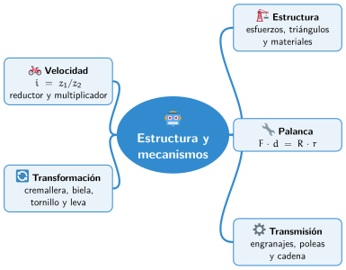

Bloque III · Arquitectura de un robot
UD07 Estructura y mecanismos
Sesiones
- Sesión 7.1 Materiales y estructuras de un robot
- Sesión 7.2 Máquinas simples y mecanismos
- Sesión 7.3 Transmisión de movimiento: engranajes, poleas y correas
- Sesión 7.4 Reducción de movimiento y relación de transmisión
- Sesión 7.5 Transformación de movimiento
Al terminar la unidad
Mapa mental de la unidad

✏️ Repasa la unidad con el mapa: tapa una rama y explica en voz alta lo que pone.